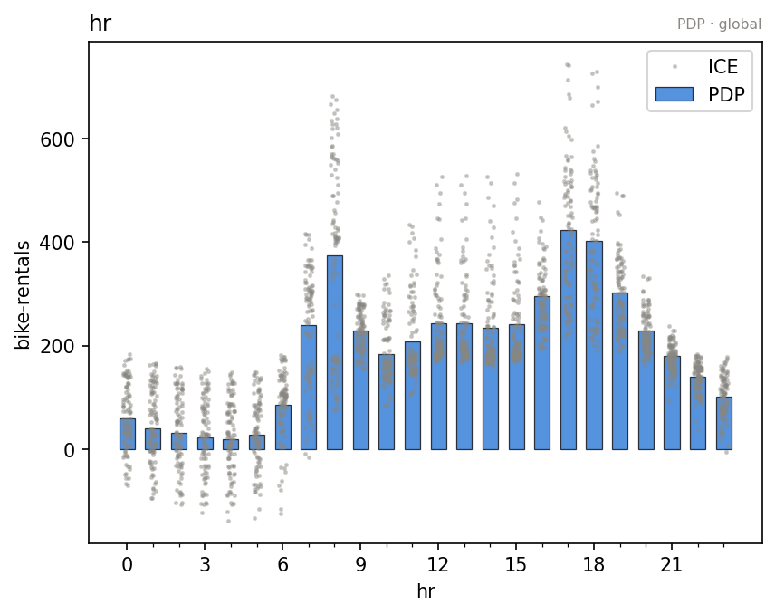
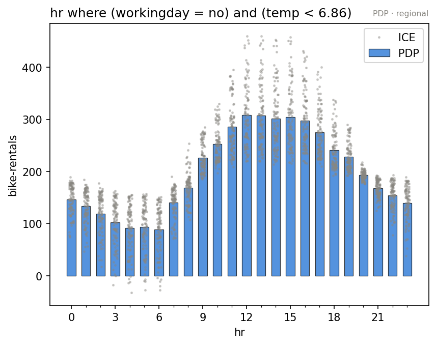

effector is an eXplainable AI package for tabular data. It:
- explains any black-box model with global and regional effects: what each feature does, and where the average hides something
- produces a report in one line:
effector.explain(X, model)fits, ranks the features, hunts for subregions, and writes a single self-contained HTML page - offers an interactive API when you want the controls: five engines (PDP, d-PDP, ALE, RHALE, SHAP-DP), one verb set
- is model agnostic: any callable
numpy → numpyworks, and adapters wrap scikit-learn, PyTorch, classifiers and DataFrame pipelines - is fast, for both global and regional methods: everything after the fit is free
📖 Documentation | 🚀 Quickstart | 🔧 API | 🏗 Examples
Installation
Effector requires Python 3.10+:
pip install effector
This installs a lightweight core (numpy, scipy, matplotlib, tqdm) that covers PDP, ALE, RHALE and their regional effects.
ShapDP needs the heavier shap/shapiq backends (which pull in numba, scikit-learn, pandas, ...). Install them only if you use that method:
pip install effector[shap]
Quickstart
(a) The inputs
A dataset as a numpy array, a model as a numpy → numpy callable, and, optionally, a schema so the explanation speaks your vocabulary:
import effector
from sklearn.ensemble import HistGradientBoostingRegressor
data = effector.datasets.BikeSharing() # standardized numpy arrays
model = HistGradientBoostingRegressor(random_state=21).fit(data.x_train, data.y_train)
predict = effector.adapters.from_sklearn(model) # a plain numpy -> numpy callable
schema = effector.Schema(
feature_names=data.feature_names,
feature_types=[
"nominal", "nominal", "ordinal", "ordinal", "nominal", "nominal",
"nominal", "ordinal", "continuous", "continuous", "continuous",
],
category_names=[
["winter", "spring", "summer", "fall"],
["2011", "2012"],
["Jan", "Feb", "Mar", "Apr", "May", "Jun",
"Jul", "Aug", "Sep", "Oct", "Nov", "Dec"],
None,
["no", "yes"],
["Sun", "Mon", "Tue", "Wed", "Thu", "Fri", "Sat"],
["no", "yes"],
["clear", "mist", "light rain/snow", "heavy rain"],
None, None, None,
],
scale_x_list=[
{"mean": data.x_train_mu[i], "std": data.x_train_std[i]}
for i in range(data.x_train.shape[1])
],
scale_y={"mean": data.y_train_mu, "std": data.y_train_std},
target_name="bike-rentals",
)
📄 In depth: the input layer; pandas, sklearn, torch, classifiers, feature types, units.
(b) The one-liner
report = effector.explain(
data.x_train, predict, y=data.y_train, schema=schema, nof_instances=5000
)
It fits once, ranks the features, hunts for subregions where the average is hiding something, keeps only the splits that pay for themselves, and opens with the one number worth having:
[effector] global effects (GAM) -> 72.3% of the model's variance
regional effects (CALM) -> 92.0%
The result is a Report, a value you can export or print:
report.to_html("report.html") # a single self-contained page; mail it, commit it
report.show() # the same story, as terminal tables
════════════════════════════════════════════════════════════════════════
PDP report · target: bike-rentals
════════════════════════════════════════════════════════════════════════
DATA & MODEL
────────────────────────────────────────────────────────────────────────
instances 5,000
features 11 · 5 nominal · 3 ordinal · 3 continuous
model output mean 188 · std 176 · range [-19.5, 948]
model R² 0.960 (on this subsample)
EXPLAINED VARIANCE
────────────────────────────────────────────────────────────────────────
step split on solo ΔR² R² heter
──────────────────────────────────────────────────────────────────────
GAM (all features global) — — 72.3% —
+ hr temp, workingday, yr +18.3% +18.3% 90.6% 0.47 → 0.26
+ temp hr, hum +2.4% +1.4% 92.0% 0.22 → 0.19
──────────────────────────────────────────────────────────────────────
FINAL 92.0%
REJECTED SPLITS min gain 1.0%
────────────────────────────────────────────────────────────────────────
feature split on solo ΔR² reason
──────────────────────────────────────────────────────────────────────
✗ yr hr, workingday +2.7% -0.8% redundant
✗ hum hr, temp +2.2% +0.2% below threshold
✗ weekday hr, temp, yr +0.4% +0.2% below threshold
✗ workingday hr, yr +6.2% -4.8% redundant
✗ redundant: it would explain variance on its own (see solo),
but the accepted splits already account for it.
FEATURES ranked, in the selected snapshot
────────────────────────────────────────────────────────────────────────
feature importance heter #regions
──────────────────────────────────────────────────────────────────────
hr 0.7273 ██████████████████ 0.2608 4
yr 0.2271 ██████ 0.2088 1
temp 0.2098 █████ 0.1874 4
hum 0.0932 ██ 0.1221 1
──────────────────────────────────────────────────────────────────────
the features above carry 82% of the total importance mass
(the accepted partition trees follow)
📄 In depth: the report; the explained variance ledger, the triage plane, the regional analysis, every knob of explain(...).
(c) The interactive API
The same engine, as a live handle you query as you go:
pdp = effector.PDP(data.x_train, predict, schema=schema, nof_instances=5000)
pdp.plot("hr") # the global effect, ICE curves behind it
pdp.heter_score("hr") # 0.47: the average hides a lot
partition = pdp.find_regions("hr") # where is it hiding it?
partition.show()
Feature 3 - Full partition tree:
🌳 Full Tree Structure:
───────────────────────
hr 🔹 [id: 0 | heter: 0.47 | inst: 5000 | w: 1.00]
workingday = no 🔹 [id: 1 | heter: 0.33 | inst: 1545 | w: 0.31]
temp < 6.86 🔹 [id: 2 | heter: 0.22 | inst: 778 | w: 0.16]
temp ≥ 6.86 🔹 [id: 3 | heter: 0.26 | inst: 767 | w: 0.15]
workingday = yes 🔹 [id: 4 | heter: 0.34 | inst: 3455 | w: 0.69]
yr = 2011 🔹 [id: 5 | heter: 0.23 | inst: 1720 | w: 0.34]
yr = 2012 🔹 [id: 6 | heter: 0.31 | inst: 1735 | w: 0.35]
--------------------------------------------------
Feature 3 - Statistics per tree level:
🌳 Tree Summary:
─────────────────
Level 0🔹heter: 0.47
Level 1🔹heter: 0.34 | 🔻0.13 (28.12%)
Level 2🔹heter: 0.26 | 🔻0.08 (22.91%)
The effect of hr depends on workingday (commute peaks vs a midday plateau), and within each branch on temp and yr. Plot the effect inside a region:
partition.plot(2) # hr, on non-working days, in the cold
 |
 |
{kind=link}
{kind=link}
Every verb answers one question:
| verb | question it answers |
|---|---|
.plot(f) |
what does feature f do? |
.eval(f, xs) |
…as numbers, on my grid |
.importance(f) |
how much does f move the output? |
.heter_score(f) |
is the average hiding something? |
.find_regions(f) |
where is it hiding it? |
.select_regions() |
which splits actually earn their keep? |
.fit(features, **cfg) |
(optional) tune the method first |
📄 In depth: the interactive API; construct and fit, customizing .fit(), plot, eval, scores, regions.
Documentation map
Start here:
- What are global and regional effects: the concepts
effector's API: the whole API in 3 minutes- (a) The input layer: numpy, models, adapters, the schema
- (b)
effector's report: the one-liner,.show(), and the HTML page - (c) The interactive API: the five engines, global and regional effects
Going deeper:
- The mental model: the thinking behind the API; one engine, values not state, two entrances
- Methods: the math reference: how each method defines the effect, its heterogeneity, and the two scalars
- The design contract: the rules the API is built on, one breath each
- Efficiency of global and regional methods: count the model calls
Supported Methods
Every method computes global effects, and regional effects via .find_regions(feature):
| Method | Class | Reference | ML model | Speed |
|---|---|---|---|---|
| PDP | PDP |
Friedman, 2001 | any | fast for a small dataset |
| d-PDP | DerPDP |
Goldstein et al., 2013 | differentiable | fast for a small dataset |
| ALE | ALE |
Apley & Zhu, 2020 | any | fast |
| RHALE | RHALE |
Gkolemis et al., 2023 | differentiable | very fast |
| SHAP-DP | ShapDP |
Lundberg & Lee, 2017 | any | fast for a small dataset and a light model |
Choosing a method
Three questions decide: is the dataset small (N < 10K) or large? Is the model light (< 0.1s per call) or heavy? Is it differentiable or not?
| your case | use |
|---|---|
| small + light | any: PDP, ALE, ShapDP; plus RHALE, DerPDP if differentiable |
| small + heavy | PDP, ALE; plus RHALE, DerPDP if differentiable |
| large + differentiable | RHALE |
| large + non-differentiable | ALE |
Citation
If you use effector, please cite it:
@misc{gkolemis2024effector,
title={effector: A Python package for regional explanations},
author={Vasilis Gkolemis et al.},
year={2024},
eprint={2404.02629},
archivePrefix={arXiv},
primaryClass={cs.LG}
}
Spotlight on effector
📚 Featured Publications
- Gkolemis, Vasilis, et al.
"Fast and Accurate Regional Effect Plots for Automated Tabular Data Analysis."
Proceedings of the VLDB Endowment | ISSN 2150-8097
🎤 Talks & Presentations
- LMU-IML Group Talk
Slides & Materials | LMU-IML Research - AIDAPT Plenary Meeting
Deep dive into effector - XAI World Conference 2024
Poster | Paper
🌍 Adoption & Collaborations
- AIDAPT Project
Leveragingeffectorfor explainable AI solutions.
🔍 Additional Resources
-
Medium Post
Effector: An eXplainability Library for Global and Regional Effects -
Courses & Lists:
IML Course @ LMU
Awesome ML Interpretability
Awesome XAI
Best of ML Python
📚 Related Publications
Papers that have inspired effector:
-
REPID: Regional Effects in Predictive Models
Herbinger et al., 2022 - Link -
Decomposing Global Feature Effects Based on Feature Interactions
Herbinger et al., 2023 - Link -
RHALE: Robust Heterogeneity-Aware Effects
Gkolemis Vasilis et al., 2023 - Link -
DALE: Decomposing Global Feature Effects
Gkolemis Vasilis et al., 2023 - Link -
Greedy Function Approximation: A Gradient Boosting Machine
Friedman, 2001 - Link -
Visualizing Predictor Effects in Black-Box Models
Apley, 2016 - Link -
SHAP: A Unified Approach to Model Interpretation
Lundberg & Lee, 2017 - Link -
Regionally Additive Models: Explainable-by-design models minimizing feature interactions
Gkolemis Vasilis et al., 2023 - Link
License
effector is released under the MIT License.
Powered by:
-
XMANAI